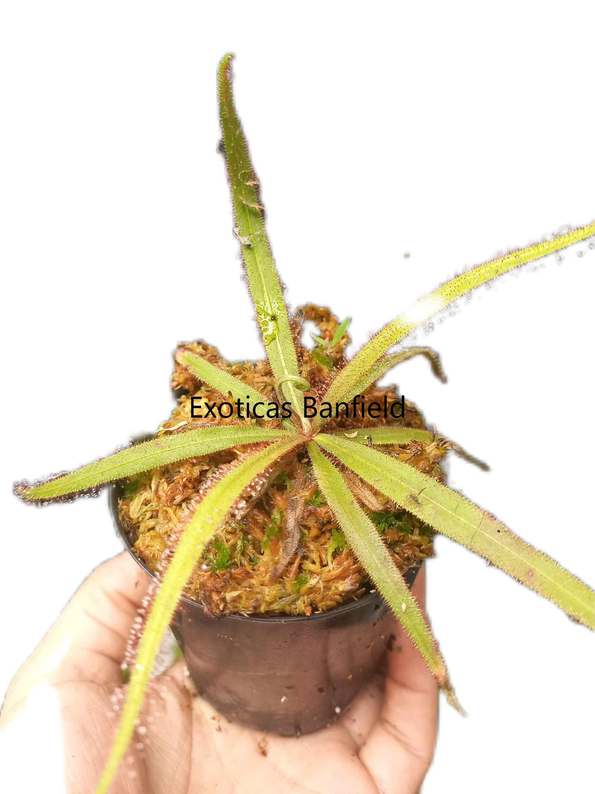
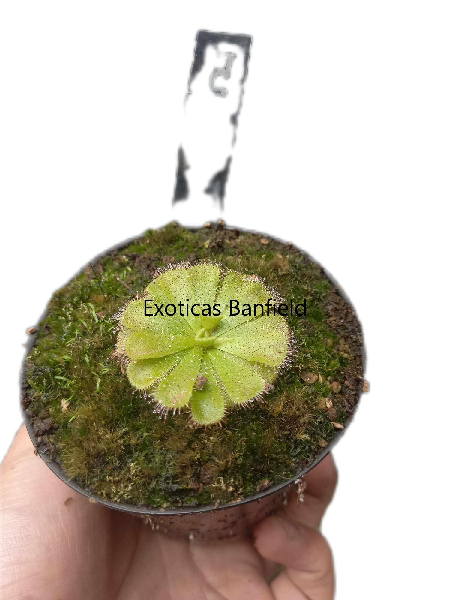
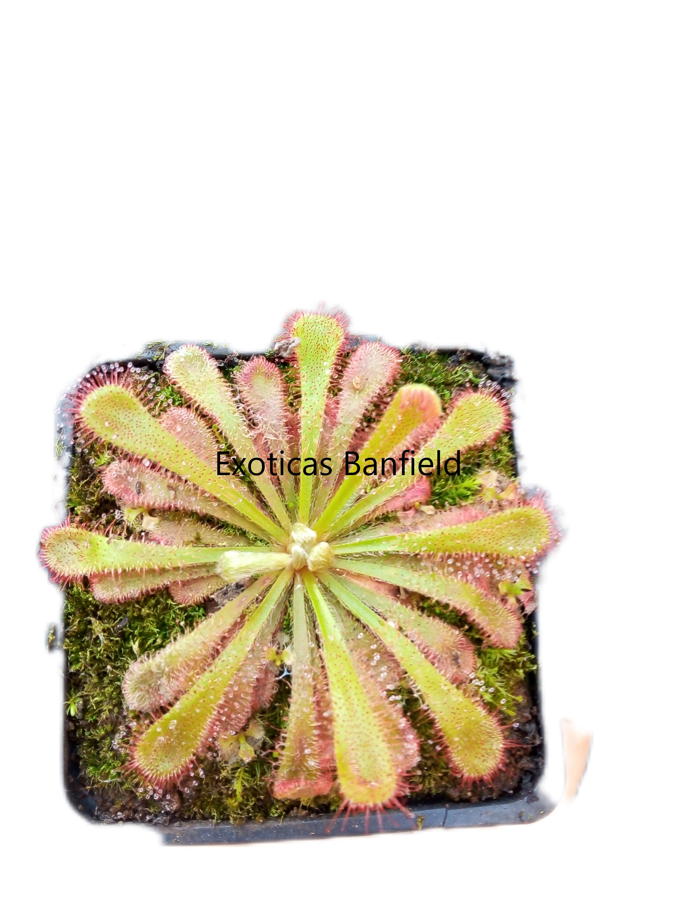

Drosera
Habitat Natural
Ubicación : Crece naturalmente en diversas partes del mundo, incluyendo Argentina, y en diferentes climas.
Entorno : Se desarrolla en entornos pobres en nitrógeno, como pantanos y humedales, generalmente a cielo abierto.
Descripcion
General: La planta carnívora posee hojas especializadas para atrapar insectos. Reconocibles por sus hojas cubiertas de tentaculos glandulares que secretan mucilago brillante parecido a gotas de rocio. Su diseño varía según la especie, pero todas comparten un mecanismo similar para atraer y capturar .Existen especies anuales, perennes con raices tuberosas , de clima templado adaptadas a distintos climas.
Variedades: Existen alrededor de 150 especies reconocidas, cada una con características y adaptaciones particulares.
Tamaño
Tamaño máximo:Varía según la especie, pero suelen ser de tamaño pequeño. La mayoría no supera los 5 cm de diámetro; sin embargo, algunas especies como la Capensis, Filiformis, Adelae o Regia pueden superar los 30 cm de altura.
Método de Captura - Pasivo
Mecanismo: Las hojas tienen tentáculos glandulares que segregan un líquido pegajoso para atrapar insectos.
Proceso: La hoja se enrolla lentamente sobre la presa y luego vuelve a su posición inicial al absorber todos los nutrientes.
Temperatura
Rango natural: Toleran,en general, temperaturas de -0ºC a 40ºC, siendo la temperatura ideal para su crecimiento entre 20ºC y 25ºC durante la época de crecimiento.
Tolerancia: La temperatura que tolera puede variar según la especie.
Precauciones:En épocas calurosas, asegúrate de regar adecuadamente y evitar dejarla sin agua. Superados los 40ºC, es mejor mantenerla fuera del sol directo.En invierno depende la especie debe protegerse del frio.
Humedad
Nivel de humedad: Vive en ambientes húmedos, pero la mayoría tolera una humedad ambiental entre el 50% y el 80%.
Riego
Agua: Solo se debe utilizar agua destilada o de lluvia. Llena la bandeja con 1 a 2 cm de agua para macetas pequeñas; en macetas más grandes, aumenta un poco más la cantidad.
Estaciones: El riego varía según la estación:
Primavera/Verano: Mantén el suelo siempre húmedo con 1 a 2 cm de agua en la bandeja.
Otoño/Invierno: Puedes volver a llenar la bandeja cuando se acabe el agua y dejar que se seque un poco si es necesario. Observa que el sustrato se seque un poco antes de regar para evitar pudriciones o aparición de hongos.
Aclaracion:Las especies tuberosas tienen un riego diferente,estas plantas casi no se riegan en verano
Floracion
Ciclo: Florece al alcanzar la madurez, usualmente al poco tiempo de germinadas.
Flores: Poseen flores de diveros tamaños y colores segun la variedad , en su mayoria son de color rosado y de pequeño tamaño
Trasplantes
Época: Se realiza, en su mayoría, durante todo el año, de preferencia con temperaturas superiores a 15ºC.
Motivo: La principal razón para trasplantar es cuando una maceta más grande proporcionaría un entorno más estable para las raíces o si el punto de crecimiento ha llegado al borde de la maceta.
Iluminación
Exterior: Requiere luz indirecta; algunas variedades soportan la luz solar directa.
Interior: Colócala junto a una ventana que reciba mucha luz. Si es necesario, complementa con iluminación artificial para asegurar un buen desarrollo.
Problemas de luz: Si falta luz, las hojas se alargan y se debilitan.EL mucilago se ve transparente o no lo produce. Aumentar la iluminación de a poco si esto sucede.
Sustrato
Requerimientos:Necesita tierra ácida y sin nutrientes. Los sustratos más utilizados son una mezcla de turba rubia y perlita o musgo de sphagnum y perlita, en proporciones 50/50, 60/40 o 70/30.
Resultados: Segun la variedad el sustrato ideal varia , para plantas pigmeas y tuberosas lo mejor es usar un sustrato arenoso , en droseras nordicas es mejor usar musgo de sphagnum . Para las demas variedades un sustrato basico de turba y perlita es suficiente
Hibernación
Variedades: Solo algunas variedades hibernan (Filiformis, binata, anglica, intermedia y otras). Hiberna desde mediados de otoño hasta principios de primavera. Durante este período, la planta comienza a secar sus trampas y reducir su tamaño para conservar energía formando hibernáculos. En primavera, renace poco a poco. Es importante controlar el riego para evitar hongos.
Alimentación
Dieta:Se alimenta de cualquier insecto que entre en sus trampas. No requiere alimentación manual, aunque se puede hacer si se desea.

Drosera Adelae

Admirabilis sp floating

Drosera sp